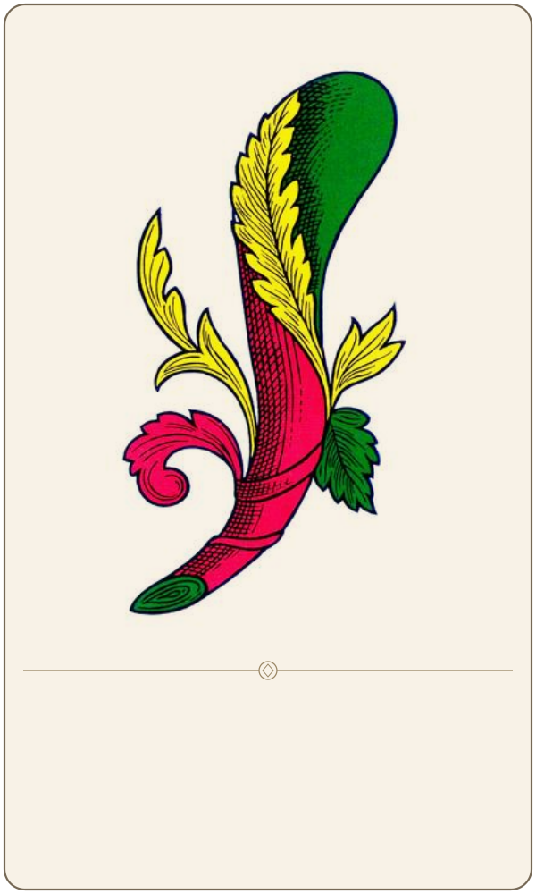
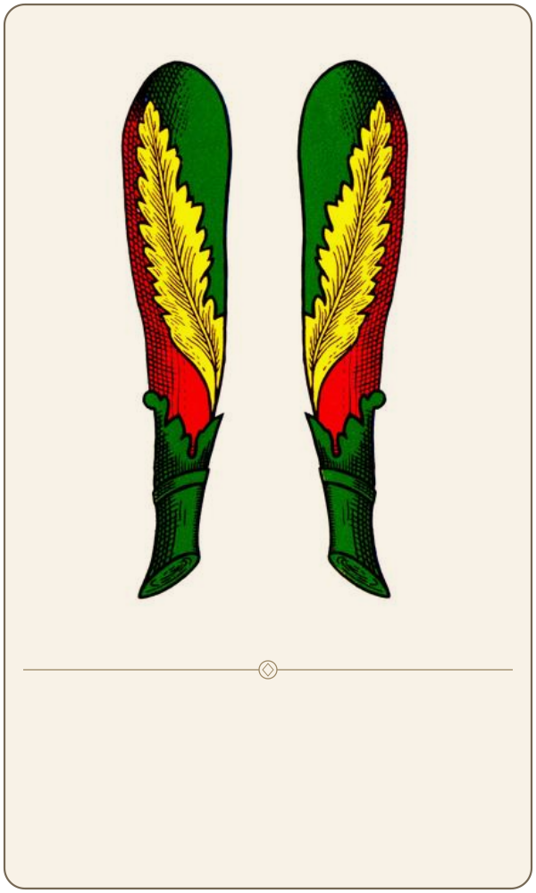
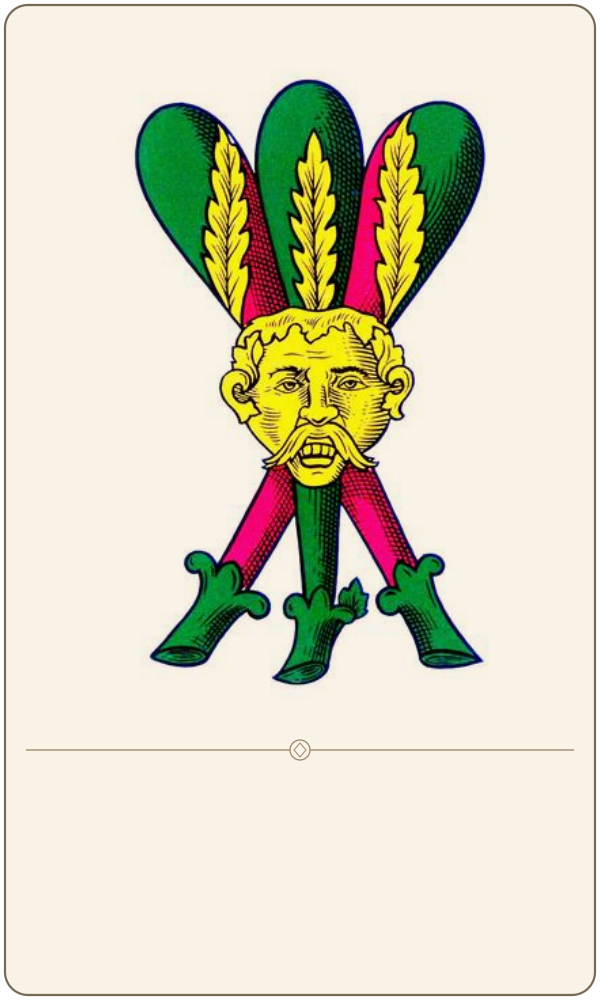
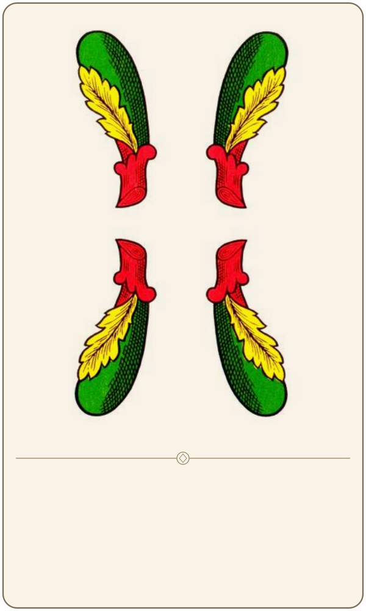
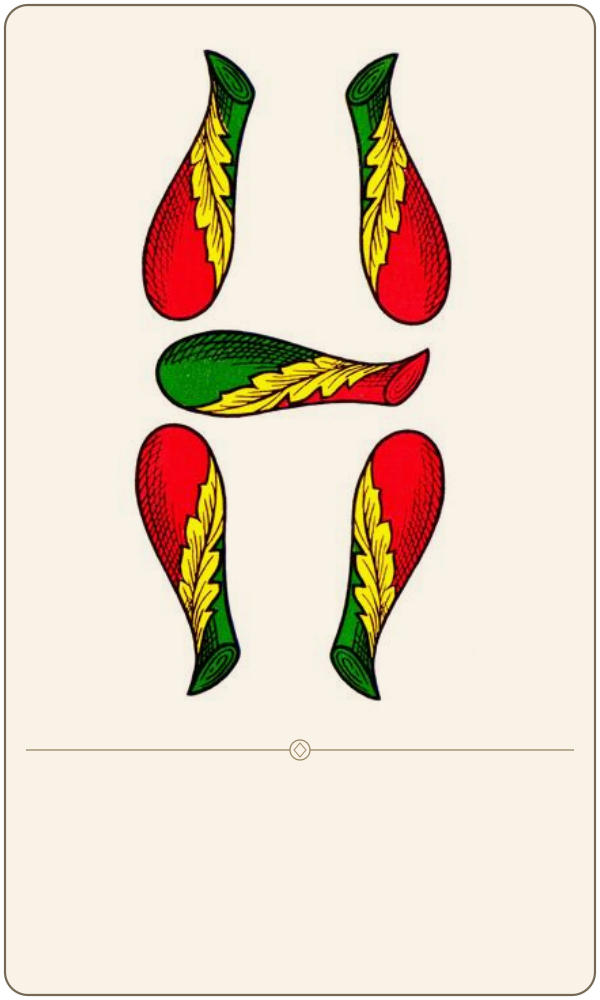
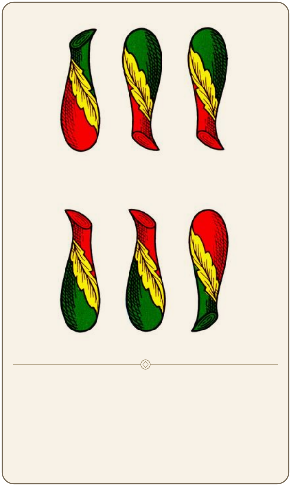
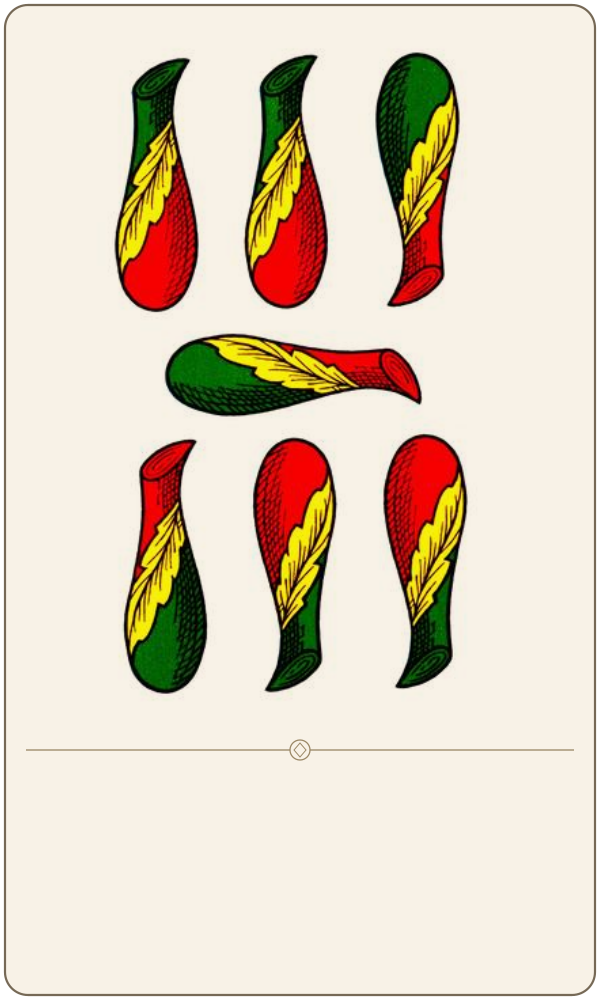
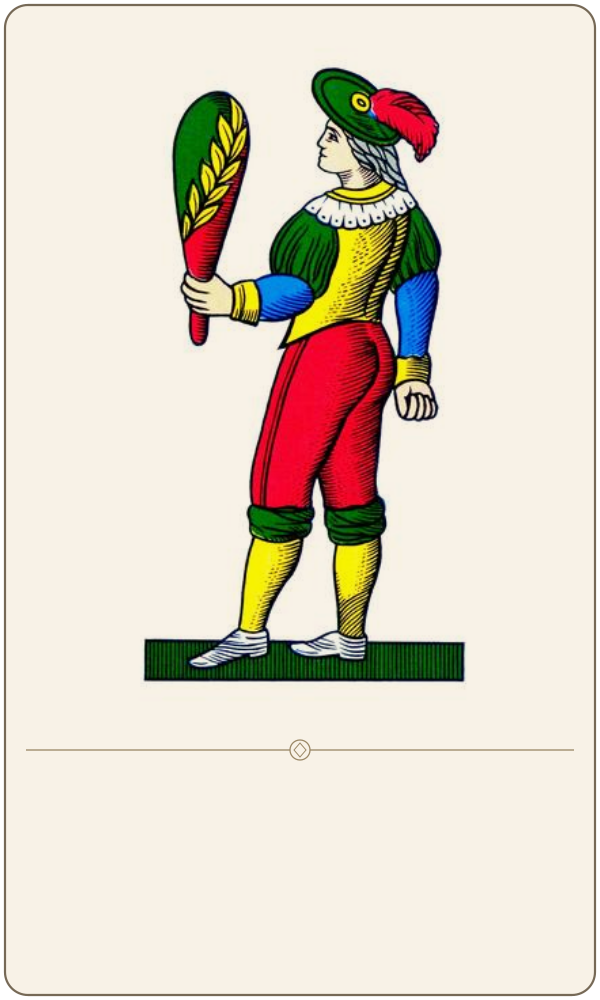
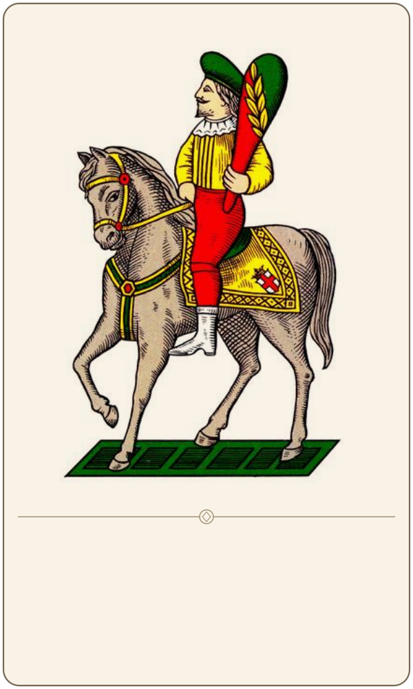
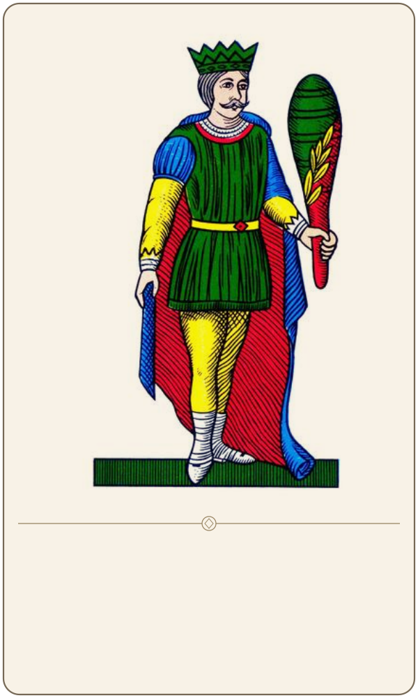

Bastoni — mazzo tradizionale
Dieci carte con i disegni napoletani originali. Lo stesso sfondo avorio, un piccolo sigillo alchemico sul divisorio e una fascia inferiore per gli effetti. Proposta: in attesa di approvazione.




























